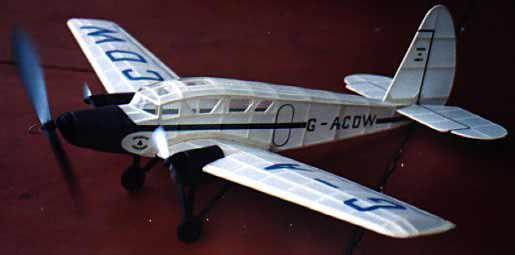
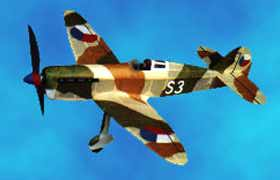
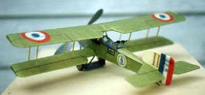

|
Thayer,
I was very pleased to see your version of the 1913 'Aviette' which is my design! You have done a very neat job and I was very impressed by the cycling leg action idea. Apart from 'what is that?', the most common comment I get about my Aviette is 'why didn't you make the legs go round?'. So now I can tell people that it is possible and that you have already done it! My model's best time is about 28 secs, so congratulations on breaking the half minute barrier - and winning a competition too! |
 |
 We have a very keen contingent of scale flyers here in South Australia who fly indoor once a month and at a variety of outdoor events throughout the year. If you are interested in more information about our activities let me know.
Meanwhile, here are a couple of jpeg files: The top image is a Spartan Cruiser. At 29 inch span it's very big for me. David Putterill joked that if I keep on at this rate I'll have to buy another sheet of balsa! I'm still working on the trim. It wants to spiral in whichever way I try to turn it. It already has enlarged tail surfaces. I'll try increasing the wing washout and maybe even increasing the dihedral...
Next is my Avia B.35 fighter (middle) and my 15 inch span WW1 Breguet 14B (in green). The Bre 14 has a best indoor time of 49 secs. The Avia is an outdoor model, a bit bigger, and a very fine flyer (though the glide needs some work...).
Tim Hayward-Brown
South Australia
return to
my version of the 'Aviette'
Copyright 1998, Thayer Syme. All rights reserved